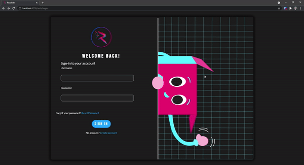
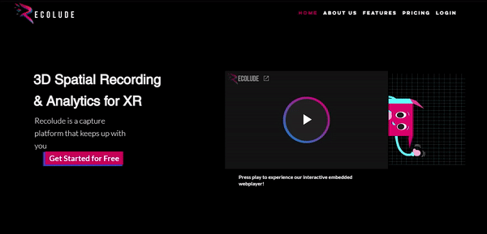

Recolude
Recolude is a a startup providing 3D spatial recording utilities for XR, research, gaming, and mocap projects.

One of my first tasks with Recolude was to redesign their login/signup flow. I created custom components and wired them up using AWS Cognito and Amplify. I also created custom art of their mascot to greet users.
Languages/Frameworks/Toolkits:
Html, SASS, Typescript, Angular, Angular Material
Developer Tools:
AWS Cognito & Amplify
I used Wix's Editor X to build the Recolude website. It was important to use design to communicate the idea of Recolude. I used graphics and animations to make the technical information easier to digest.
